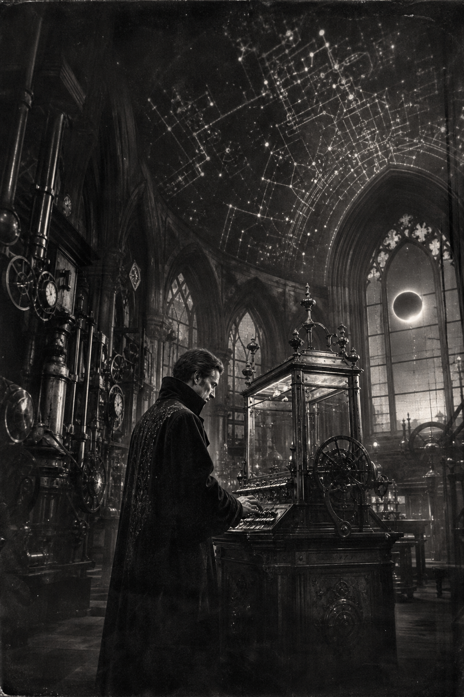

Morning Edition
6:00 AM CDTFinance & Markets
Nvidia Relights the Tape
Wall Street bought the AI story again on Thursday. Nvidia closed at $227.98, up 8.74%, after posting $96.2 billion in fiscal Q2 revenue and guiding to $108 billion, plus or minus 2%, for the current quarter. The S&P 500 rose 0.72% to 7,731 and the Nasdaq 1.57% to 26,541. Broadcom jumped 4.49%; AMD slipped 0.89%. Friday's open now waits on Jackson Hole.
Source: The Motley Fool and NVIDIA, August 26–27, 2026Warsh Faces the Tetons
Fed Chair Kevin Warsh delivers his first Jackson Hole keynote this morning, promising to "frame the big questions" rather than map the funds rate. July inflation is still 3.4%, well above the 2% target, and Cleveland Fed President Beth Hammack is already arguing for a September hike. Markets still expect a hold. Analysts do not expect forward guidance from the podium.
Source: NBC News, August 28, 2026Private Capital Joins the Factory Build
Nvidia said it is partnering with Apollo, BlackRock, Blackstone, Brookfield, Goldman Sachs, and KKR to stand up independent compute-financing platforms meant to mobilize more than $500 billion of third-party capital for AI infrastructure, subject to definitive agreements. That is the PE story in one line: fewer spray-and-pray deals, larger tickets attached to power, chips, and racks.
Source: NVIDIA Q2 FY2027 release, August 26, 2026World & US
Nepal-Tibet Floods Kill More Than 390
Rescue crews are still digging through mud several stories high after a glacier collapse sent flash floods across the Nepal-China border. Associated Press reporting puts the death toll above 390, with more than 1,400 people missing: at least 389 dead and 910 missing in Nepal, and at least 3 dead and 558 missing in Tibet. India's foreign ministry said 290 Indian nationals remain uncontactable.
Source: Associated Press and The Hindu, August 27–28, 2026Norway's King Harald V Dies at 89
The palace said King Harald died peacefully at 06:35 local time Friday at Oslo University Hospital. He had been treated for haemolytic anaemia and a later infection after entering hospital on August 17. Crown Prince Haakon, 53, succeeds him and convenes an extraordinary council of state today. Harald, Europe's oldest reigning monarch, spent 35 years modernizing a people's monarchy.
Source: BBC News, August 28, 2026Freedom Edge Drills Are On
South Korea's Joint Chiefs confirmed that the annual U.S.–South Korea–Japan Freedom Edge exercise will run September 7–11 in waters east and south of Jeju. Seoul called the drills defensive. The decision lands after Washington halved last week's Ulchi Freedom Shield exercises on President Trump's order, a move read as a gesture toward Pyongyang.
Source: The Korea Times, August 28, 2026
The Friday Constellation: after the eclipsed Sturgeon Moon, the wizard does not wait for confidence. He starts the hard line, then lets the proof catch up.
"Momentum is not a mood. It is the first honest compile."- The Developer's Almanac
Sagittarius Horoscope
Justin, the sky starts slow and then pays for motion. Jupiter backs the bigger aim, but the Moon rattles your rhythm, so do not wait for the perfect mood to ship. In developer language: open the failing test before inbox gravity wins, land one verified hunk, and let a collaborator unstick the rest. Your Rat-year ingenuity compounds when you begin anyway and treat discipline as the build cache. Keep the voice warm even when attention splits. Lucky hex: #2e7d4f. Lucky command: make test.
Tech, AI, Space & Crypto
-
Compute Is Now Revenue
Jensen Huang called this a golden age of frontier labs running in parallel, with Vera Rubin in full production. Data-center revenue hit $89.0 billion. Q3 guidance of $108 billion assumes no China data-center compute. The tape already voted; Jackson Hole is the remaining interrupt.
Source: NVIDIA, August 26, 2026 -
Roman's Go/No-Go Is Today
NASA and SpaceX host the Launch Readiness Review this morning for the Nancy Grace Roman Space Telescope. Liftoff is targeted for 7:26 a.m. EDT Sunday from Kennedy's Pad 39A, nine months ahead of the original schedule, already inside a Falcon Heavy fairing.
Source: NASA Science, August 25, 2026 -
The Sturgeon Moon Almost Vanished
Overnight's deep partial lunar eclipse covered 96% of the Full Moon at 12:13 a.m. EDT. Only a thin sliver stayed bright. For Central Time, the umbral show was already ending around 12:51 a.m. No gear required—just patience, which is also the compile strategy.
Source: Astronomy magazine, August 21–28, 2026 -
Bitcoin Holds the $80,000 Handle
Bitcoin traded near $80,000 into Friday after a strong August rebound. Spot ETF inflows have been a supporting current in recent sessions, but the cleaner signal is still the level itself: the market is defending the round number while the Fed speaks.
Source: MarketWatch BTCUSD, August 28, 2026 -
OpenClaw Shows Up in Nvidia's Local Stack
Nvidia's earnings packet listed a local-AI push with open models and agent harnesses, including Hermes Agent and OpenClaw across RTX and DGX platforms. The garden just got a footnote in a $96 billion quarter. Stay humble; keep shipping.
Source: NVIDIA Q2 FY2027 release, August 26, 2026
Morning Compile
- Nvidia is the interrupt; Warsh is the control plane.
- Private capital is wiring itself to the factory floor, not spraying smaller tickets.
- Roman gets its go/no-go. Start the hard test before confidence arrives.
- Ship one verified change. Momentum is the passing suite, not the mood.